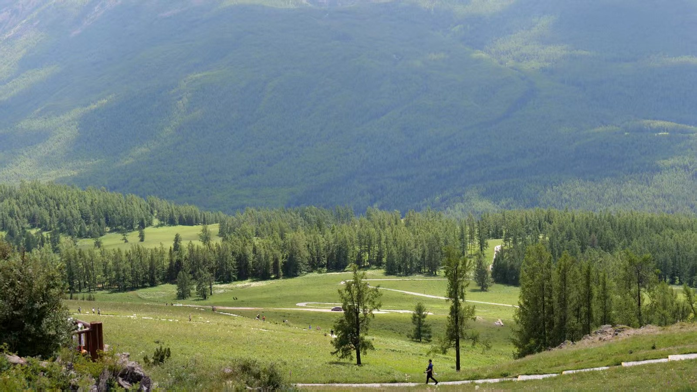
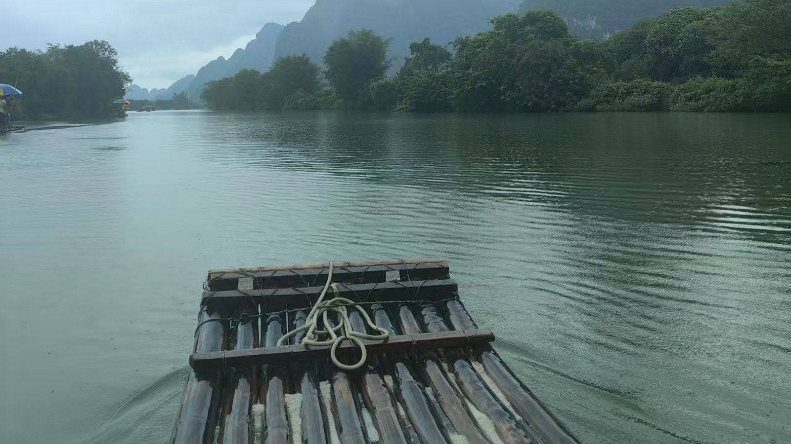
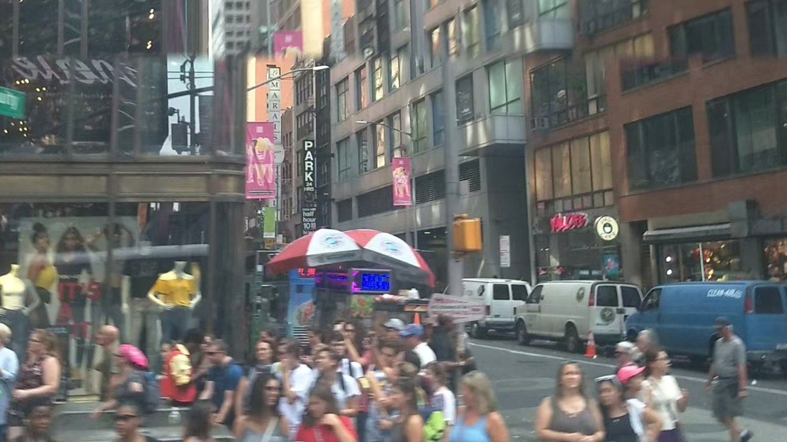
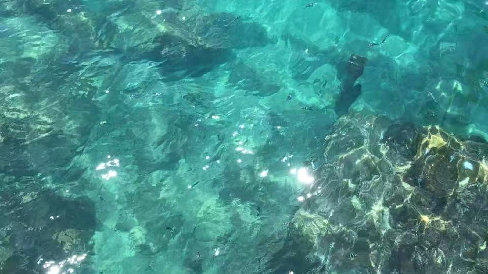

01
Strategy Signal Deck
消费科技产品舆论与竞品研判工具，把外部 UGC 和平台反馈整理成产品判断线索。A consumer-tech intelligence tool that turns UGC and competitor feedback into product judgment signals.
这个网站不只是简历，也是我观察世界的方式：产品策略、AI 工作流、消费科技叙事，以及一些摄影里的生活切片。This site is not just a resume. It is a way to understand how I observe the world: product strategy, AI workflows, consumer-tech narratives, and fragments of life through photography.
我不是典型科班产品人，这反而让我更在意真实用户，而不是术语本身。好的产品表达不是把功能说满，而是把用户为什么需要它讲清楚。I am not a typical product person from a conventional technical background. That makes me care less about jargon and more about real users. Good product storytelling does not overload people with features; it clarifies why the product matters.
我关注消费科技、竞品舆论、用户反馈和发布会表达之间的关系。信息不是越多越好，关键是把噪音压缩成判断。I study the relationship between consumer technology, competitor narratives, user feedback, and launch communication. More information is not always better; the real work is compressing noise into judgment.
我更关心 AI 如何进入真实工作流：资料分析、讲稿优化、周报表达、会议纪要、Deck 大纲、舆情复盘。工具本身不重要，重要的是它有没有提高判断密度。I care about how AI enters real workflows: research synthesis, keynote polishing, weekly reporting, meeting minutes, deck outlines, and product intelligence. The tool itself is not the point; the point is whether it increases judgment density.
我希望这里不只展示“我做过什么”，也展示“我是怎么感受和观察的”。摄影对我来说不是作品包装，而是一种训练：观察光线、秩序、情绪、距离和人的状态。I do not want this site to only show what I have done. I also want it to show how I see and feel. For me, photography is not decoration; it is training in light, order, emotion, distance, and human presence.




在 vivo 产品营销实习中，我开始更系统地理解发布会、权益、KOL 场景和功能卖点如何共同构成一套信任机制。参数是基础，叙事决定它能不能被记住。During my product marketing internship at vivo, I learned how keynote messaging, user scenarios, benefits, and KOL perspectives form a trust-building system. Specs are the foundation; narrative decides whether people remember them.
这里不是把经历堆成简历，而是留下几件可以继续展开的作品：工具、系统、表达、观察。它们共同组成一个更立体的我。This is not just a list of experiences. These are works that can keep unfolding: tools, systems, communication, and observation. Together, they make a more dimensional picture of who I am.
消费科技产品舆论与竞品研判工具，把外部 UGC 和平台反馈整理成产品判断线索。A consumer-tech intelligence tool that turns UGC and competitor feedback into product judgment signals.
面向实习生和职场新人的 AI 工作流小程序，覆盖周报、会议、Deck、表格等高频任务。An AI workflow mini-program for interns and early-career workers, covering reports, meetings, decks, and tables.
摄影作为观察方式，记录城市、旅行、光线和人的状态，让网站不只呈现能力，也呈现审美和生活感。Photography as a way of observing cities, travel, light, and people — making this site not only about capability, but also taste and life.